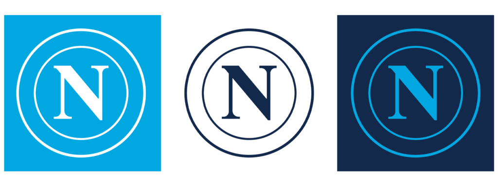
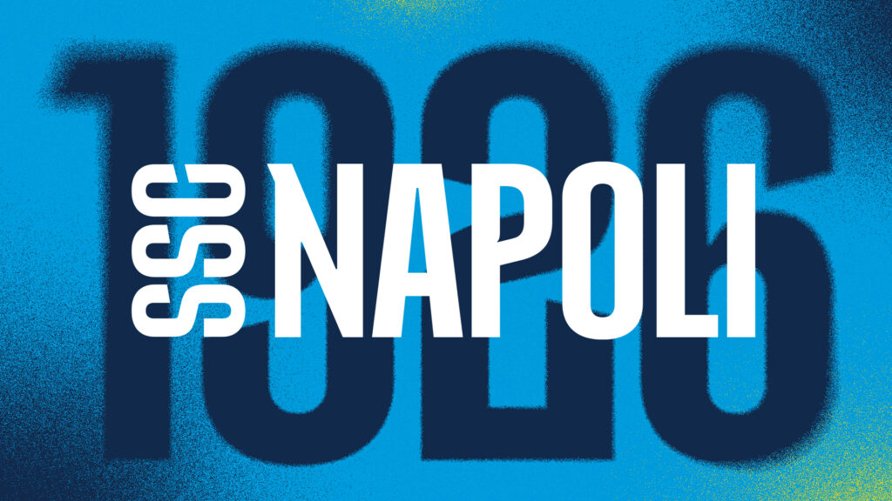
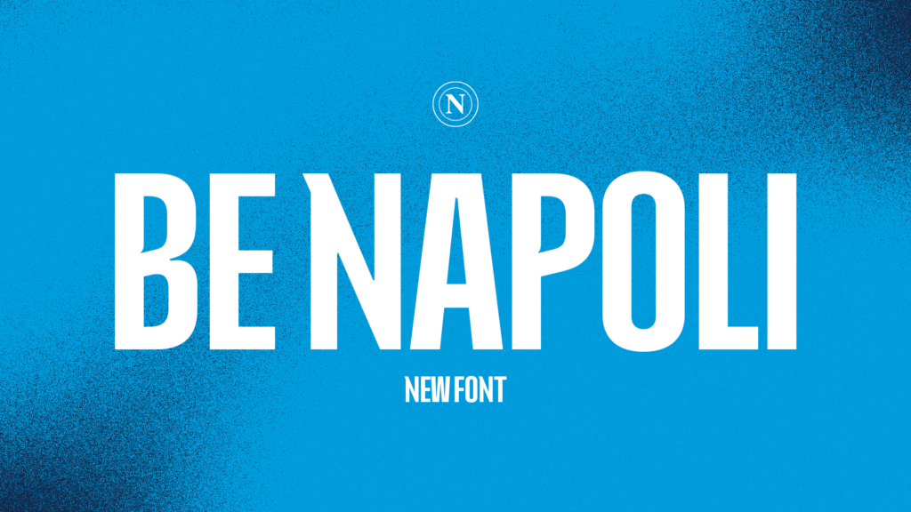
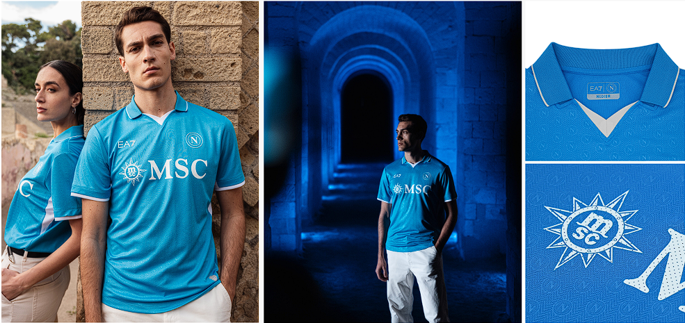

New York City FC presenta una actualización de su emblema, manteniendo su icónica identidad mientras introduce mejoras sutiles en diseño y tipografía. El nuevo escudo, diseñado por el tipógrafo Tobias Frere-Jones, refuerza la conexión con los fans y celebra el legado del club, preparándose para un futuro ambicioso.
El Club Napoli ha revelado su nuevo escudo, una actualización significativa que busca reforzar su identidad visual y la conexión con sus seguidores. Este lanzamiento se realizó el 4 de julio de 2024, en el marco de una campaña titulada “Proud to be Napoli”, que pretende resaltar el orgullo de pertenecer al club y a la ciudad de Nápoles.
El nuevo escudo presenta una versión simplificada de la emblemática “N” napolitana, ahora con un diseño monocromático. Este cambio no solo aporta un aspecto contemporáneo, sino que también facilita su adaptación a diferentes contextos, con variantes en azul marino y blanco, además del clásico azul celeste. Este enfoque se alinea con las tendencias actuales del diseño gráfico, donde la claridad y la simplicidad son cruciales para la visibilidad en plataformas digitales y productos promocionales.
Una de las adiciones más notables es la creación de una tipografía propia llamada “BE NAPOLI”. Esta fuente no solo complementa el nuevo escudo, sino que también busca crear una cohesión visual en toda la identidad del club, un aspecto vital en el branding deportivo actual. Según el club, esta tipografía se usará en toda la comunicación visual, ayudando a contar la historia y la esencia de Nápoles a través de un diseño moderno y accesible.
La reacción de los aficionados ha sido diversa; algunos elogian la modernidad del nuevo diseño, mientras que otros sienten nostalgia por los detalles más complejos del escudo anterior. Sin embargo, la dirección del club, ahora bajo el mando de Antonio Conte, se muestra comprometida con esta transformación, señalando un nuevo comienzo después de un período desafiante para el equipo
El lema “Proud to be Napoli” no solo encapsula la esencia de esta nueva identidad, sino que también refleja el deseo del club de involucrar a sus aficionados en un viaje compartido. Este enfoque busca conectar emocionalmente con la comunidad, destacando no solo el legado del club, sino también la riqueza cultural de Nápoles, lo que puede fortalecer aún más el vínculo entre el equipo y sus seguidores.
 